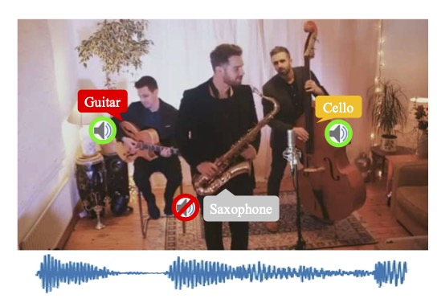

Class-aware Sounding Objects LocalizationTPAMI 2021 |
|||||
Di Hu, Yake Wei, Rui Qian, Weiyao Lin, Ruihua Song, Ji-Rong Wen |
|||||
Download Paper, Code & Dataset, Video Tutorial[Chinese version] |
|||||
 Audiovisual scenes are pervasive in our daily life. It is commonplace for humans to discriminatively localize different sounding objects but quite challenging for machines to achieve class-aware sounding objects localization without category annotations, i.e., localizing the sounding object and recognizing its category. To address this problem, we propose a two-stage step-by-step learning framework to localize and recognize sounding objects in complex audiovisual scenarios using only the correspondence between audio and vision. First, we propose to determine the sounding area via coarse-grained audiovisual correspondence in the single source cases. Then visual features in the sounding area are leveraged as candidate object representations to establish a category-representation object dictionary for expressive visual character extraction. We generate class-aware object localization maps in cocktail-party scenarios and use audiovisual correspondence to suppress silent areas by referring to this dictionary. Finally, we employ category-level audiovisual consistency as the supervision to achieve fine-grained audio and sounding object distribution alignment. Experiments on both realistic and synthesized videos show that our model is superior in localizing and recognizing objects as well as filtering out silent ones. We also transfer the learned audiovisual network into the unsupervised object detection task, obtaining reasonable performance.
Music scenes with multiple-sources are common in our daily life. We first conduct expreiments on seceral realistic and synthetic dataset and visualize some localization oo cocktail-party videos. Our model can localize objects of different classes and filter out silent ones. The green box indicates target sounding object area, and the red box means this class of object is silent, and its activation value should be low.
Besides the music scenes, we expand our method to more general daily cases covering various sounding objects, e.g., humans, animals, vehicles. We also conduct expreiments on seceral real and synthetic dataset covering more general scenes and visualize some localization results.
In this work, we utilize the correspondence between audio and vision to perform class-aware sounding objects localization. And the model can learn vision knowledge of different objects during the training of sounding object localization. Then, we propose to transfer such knowledge into typical vision tasks, like object detection. Concretely, the obtained localization heatmap is then used to generate bounding box. The generated bounding box and the cluster label are utilized to train a Faster-RCNN model. Based on the experiment results, our method is able to distinguish different objects and generate bounding boxes effectively.
MUSIC-Synthetic & VGGSound-Synthetic: To help the learning and evaluation of multiple-sources sound localization in the cocktail-party scenario, we build multi-source videos by artificially synthesizing solo videos from the MUSIC and VGGSound dataset, repectively. Go in detail, we first randomly select four 1-second solo audiovisual pairs of different categories, then get the multi-source video frames by means of mixing random two audio clips with jittering, and multi-source video frame is synthesized through concatenating four frames of these clips. That means there are two sounding instruments and two silent instruments in the synthesized audiovisual pair. Thus, this synthesized dataset is quite appropriate for the evaluation of class-aware sounding object localization.
Realistic MUSIC & DailyLife: To further evaluate our model in real-world scenes, we collect real multi-source instrument videos and real multi-source daily life scenes on YouTube. Each instrument video includes 3 to 4 instruments and each daily life scene includes 2 events Because of the high noise of the real data, we perform manual labeling for bounding box annotation. We select the first second from each video and manually label the corresponding frame, marking out the bounding boxes and whether each object is sounding or not.
For more details about the dataset, please refer to our paper.
If you find our work useful in your research, please cite:
@article{hu2021class,
title={Class-aware Sounding Objects Localization via Audiovisual Correspondence},
author={Hu, Di and Wei, Yake and Qian, Rui and Lin, Weiyao and Song, Ruihua and Wen, Ji-Rong},
journal={IEEE Transactions on Pattern Analysis and Machine Intelligence},
year={2021}
}